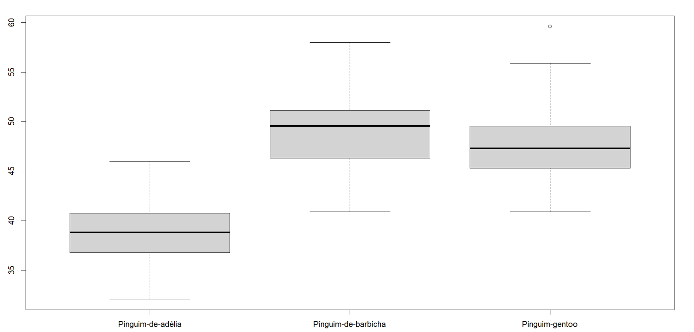
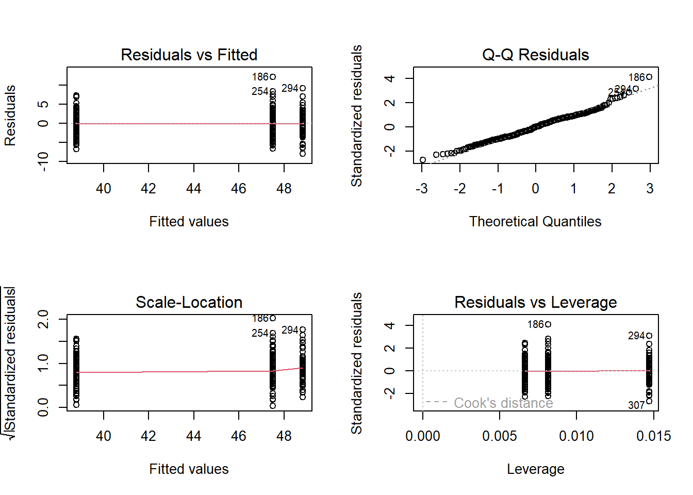

Esse documento foi desenvolvido para organizar meus estudos em Análise de Variância - ANOVA.
Author
Wellington Santos Souza
Published
Saturday, 28 December 2024
Análise de Variância - ANOVA

Para a análise de variância devemos ter uma variável numérica no eixo \(y\), nossa variável respota, e uma variável categórica com mais de dois tratamentos no eixo \(x\), nossa variável explicativa.
As hipótese nula e alternativas a serem testadas são:
\(H_0\): igualdade entre as médias dos tratamentos
\(H_1\): diferença entre as médias dos tratamentos
Rejeitamos \(H_0\) com um \(\alpha\) de \(0,05\), para um valor-p maior que \(0,05\)
Para praticar vamos usar a base dados pinguins do pacote dados. Para instalar e carregar o pacote fazemos:
Agora, criaremos o objeto com as variáveis de interesse usando a função aov, o nosso objetivo aqui é testar os pressupostos.
Code
mod_01 <-aov(comprimento_bico ~ especie, data = pinguins)
Testando pressupostos
Gráficos para testar:
linearidade
normalidade
homogeneidade
alavancagem
Code
par(mfrow =c(2,2))plot(mod_01)

Linearidade
Como podemos notar no gráfico de linearidade Residuals vc Fitted o pressupposto de linearidade é atendido, pois a linha pontilhada vermelha está bem reta.
Normalidade
O gráfico Q-Q Residuals mostra os pontos bem encima da linha pontilhada, isso mostra que o pressuposto de Normalidade foi atendido.
Homogeneidade
O gráfico Scale-Location indica que nossos dados são bem homogêneos, pois a linha vermelha está bem reta.
Alavancagem
O gráfico de alavancagem mostra poucos pontos influentes, mas não estão muito longe dos demais.
Por fim, podemos notar que todos os pressupostos foram atendidos, assim podemos seguir com a análise de variância.
Interpretando o modelo
O nosso objetivo aqui é verificar se existe diferência no tamanho do bico dos pinguins entre as espécies.
Para ver o resultado:
Code
anova(test = F, mod_01) |>kable()
Df
Sum Sq
Mean Sq
F value
Pr(>F)
especie
2
7194.317
3597.158720
410.6003
0
Residuals
339
2969.888
8.760732
NA
NA
Usando o pacote report
Code
mod_01 |>report()
The ANOVA (formula: comprimento_bico ~ especie) suggests that:
- The main effect of especie is statistically significant and large (F(2, 339)
= 410.60, p < .001; Eta2 = 0.71, 95% CI [0.67, 1.00])
Effect sizes were labelled following Field's (2013) recommendations.
A análise de variância (ANOVA) realizada, utilizando o modelo comprimento_bico ~ especie, revelou que o fator “espécie” tem um efeito principal estatisticamente significativo e de grande magnitude sobre o comprimento do bico. O teste F indicou $F(2, 339) = 410,60 $, com um valor de p menor que 0,001, o que demonstra que as diferenças entre as médias do comprimento do bico para as três espécies analisadas são altamente improváveis de serem atribuídas ao acaso. O tamanho do efeito \((Eta^2 = 0,71)\) sugere que 71% da variabilidade total no comprimento do bico é explicada pelas diferenças entre as espécies, o que, segundo os critérios de Field (2013), é considerado um efeito muito grande. O intervalo de confiança de 95% para \(Eta^2 [0,67, 1,00]\) reforça a robustez dessa estimativa. Esses resultados indicam que as diferenças no comprimento do bico entre as espécies são substanciais e estatisticamente relevantes.
Code
boxplot(comprimento_bico ~ especie, data = pinguins)